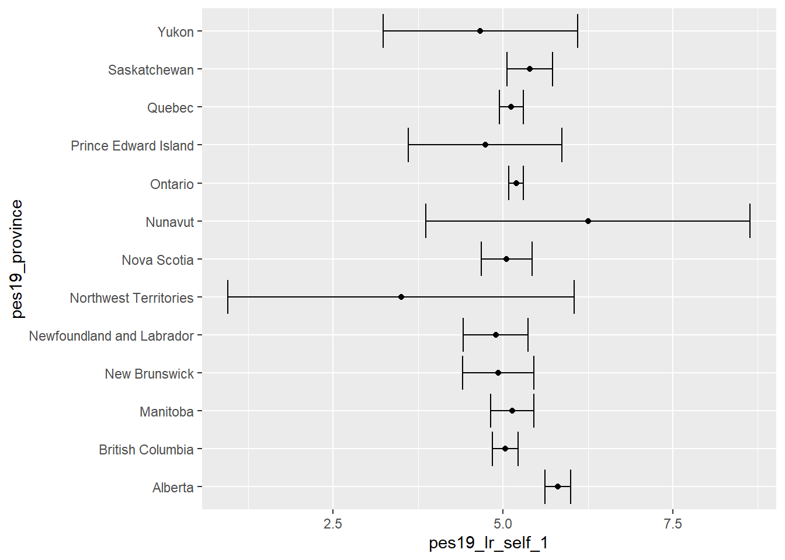

# Dataset laden
library(rio)
canada <- import("2019 Canadian Election Study.rds")16 ANOVA
Om het gebruik van ANOVA te illustreren vergelijken we de gemiddelde links-rechts zelfplaatsing (pes19_lr_self_1) in Canadese provincies (pes19_province). We maken hierbij gebruik van gegevens uit Canadees kiezersonderzoek:
Eerst maken we een plot van de gemiddelde schattingen met 95%-betrouwbaarheidsintervallen om een idee te krijgen van de gegevens:
library(tidyverse)ggplot(data = canada |> filter(!is.na(pes19_province)),
mapping = aes(x = pes19_lr_self_1, y = pes19_province)) +
stat_summary(fun.data = "mean_se", geom = "point") +
stat_summary(fun.data = "mean_cl_normal", geom = "errorbar") Warning: Removed 5971 rows containing non-finite outside the scale range
(`stat_summary()`).
Removed 5971 rows containing non-finite outside the scale range
(`stat_summary()`).
ggplot(…)-
Dit is de functie om een grafiek te maken.
data = canada |> filter(!is.na(pes19_province))-
We specificeren de gebruikte dataset:
canada. We geven ook aan waarop we dit dataframe willen filteren, zodat alleen gevallen met niet-ontbrekende waarden voor de variabelepes19_provincieoverblijven. mapping = aes(x = pes19_lr_self_1, y = pes19_province))-
Deze code koppelt twee variabelen uit de dataset aan respectievelijk de x- en y-as.
stat_summary(fun.data = "mean_se", geom = "point"))-
De functie
stat_summarybiedt een snelle manier om het gemiddelde voor elke groep te berekenen (fun.data = "mean_se") en dit in onze grafiek uit te zetten als een punt (geom = "point"). stat_summary(fun.data = "mean_cl_normal", geom = "errorbar")-
De functie
stat_summarywordt opnieuw gebruikt, maar nu om een betrouwbaarheidsinterval voor het gemiddelde te berekenen (fun.data = "mean_cl_normal"), dat vervolgens als een foutbalk in de grafiek wordt weergegeven (geom = "errorbar").
Het kan ook handig zijn om de achterliggende cijfers ter beschikking te hebben (al is de visuele weergave waarschijnlijk meer geschikt in een paper):
library(DescTools)Warning: package 'DescTools' was built under R version 4.4.0canada |>
group_by(pes19_province) |>
summarise(mean = mean(pes19_lr_self_1, na.rm=TRUE),
SE = MeanSE(pes19_lr_self_1, na.rm=TRUE))# A tibble: 14 × 3
pes19_province mean SE
<fct> <dbl> <dbl>
1 Alberta 5.81 0.0952
2 British Columbia 5.03 0.0969
3 Manitoba 5.14 0.162
4 New Brunswick 4.93 0.265
5 Newfoundland and Labrador 4.89 0.241
6 Northwest Territories 3.5 0.992
7 Nova Scotia 5.05 0.189
8 Nunavut 6.25 0.75
9 Ontario 5.19 0.0551
10 Prince Edward Island 4.74 0.545
11 Quebec 5.12 0.0895
12 Saskatchewan 5.39 0.168
13 Yukon 4.67 0.333
14 <NA> NaN NA 16.1 One-way ANOVA
We kunnen de eenzijdige ANOVA (one-way ANOVA) berekenen met de functie aov uit package stats (een van de weinige packages die R automatisch laadt bij het opstarten):
anova_out <- aov(formula = pes19_lr_self_1 ~ pes19_province,
data = canada)
summary(anova_out)anova_out <- aov()-
De functie
aovberekent de ANOVA. We wijzen de resultaten toe aan objectanova_out(je kunt elke geldige naam kiezen die je wilt). formula = pes19_lr_self_1 ~ pes19_province-
Dit specificeert de te gebruiken formule in het formaat
<interval-ratio variabele> ~ <categoriale variabele>. In ons voorbeeld is de interval-ratio variabelepes19_lr_self_1en de categoriale (groeperings) variabele ispes19_provincie. Vervang voor je eigen gegevens door de juiste variabelen. data = canada-
Dit specificeert de te gebruiken dataset.
summary(anova_out)-
Dit geeft een samenvatting van het door ons geschatte model (
anova_out).
Df Sum Sq Mean Sq F value Pr(>F)
pes19_province 12 277 23.046 4.261 9.74e-07 ***
Residuals 4356 23561 5.409
---
Signif. codes: 0 '***' 0.001 '**' 0.01 '*' 0.05 '.' 0.1 ' ' 1
33453 observations deleted due to missingnessDe samenvatting geeft de vrijheidsgraden (Df), de som van de kwadraten (Sum Sq), de gemiddelde kwadraten (Mean Sq), de F-waarde (F-waarde) en de p-waarde (Pr(>F)).
Rapportage
- Er is een significant verschil in de gemiddelde links-rechtsscores van inwoners van Canadese provincies, F(12, 4356) = 4,261, p < 0,001.
Noem dus in ieder geval:
F met tussen haakjes de twee bijbehorende vrijheidsgraden = F-waarde
p = p-waarde. Maar: schrijf nooit \(p = 0,000\). Want de p-waarde is nooit precies nul, maar heel klein. Het is dan beter om te zeggen \(p < 0,001\). Als je een handmatige toets uitvoert schrijf je p < α-waarde, bijvoorbeeld \(p < 0,05\).
16.2 Paargewijze t-toets voor het vergelijken van gemiddelden van meerdere groepen
We kunnen een paarsgewijze t-toets gebruiken om de gemiddelden van alle mogelijke paren van groepen te vergelijken. We gebruiken een correctie voor meervoudige testen (bonferroni-correctie) om rekening te houden met het feit dat we veel t-toetsen uitvoeren:
pairwise.t.test(x = canada$pes19_lr_self_1,
g = canada$pes19_province,
p.adjust.method = "bonferroni",
alternative = "two.sided")pairwise.t.test(…)-
Deze roept de functie
pairwise.t.testaan om deze test uit te voeren. Deze is opgenomen in destatspackages, die automatisch worden geladen. x = canada$pes19_lr_self_1-
We specificeren hier de interval-ratio variabele (in ons geval variabele
pes19_lr_self_1uit de datasetcanada). We moeten het dollarteken gebruiken, dus<dataset>$<variabelenaam>. g = canada$pes19_province-
We specificeren hier de groeperingsvariabele, opnieuw met behulp van de dollartekennotatie (zie hierboven).
p.adjust.method = "bonferroni"-
Hiermee wordt aangegeven dat we de Bonferroni-correctie willen gebruiken.
alternative = "two.sided"-
Dit voert tweezijdige significantietoetsen uit (de standaard). Andere opties zijn
" greater"en"less".
Pairwise comparisons using t tests with pooled SD
data: canada$pes19_lr_self_1 and canada$pes19_province
Alberta British Columbia Manitoba New Brunswick
British Columbia 1.7e-06 - - -
Manitoba 0.022 1.000 - -
New Brunswick 0.041 1.000 1.000 -
Newfoundland and Labrador 0.066 1.000 1.000 1.000
Northwest Territories 1.000 1.000 1.000 1.000
Nova Scotia 0.034 1.000 1.000 1.000
Nunavut 1.000 1.000 1.000 1.000
Ontario 4.5e-06 1.000 1.000 1.000
Prince Edward Island 1.000 1.000 1.000 1.000
Quebec 3.0e-05 1.000 1.000 1.000
Saskatchewan 1.000 1.000 1.000 1.000
Yukon 1.000 1.000 1.000 1.000
Newfoundland and Labrador Northwest Territories
British Columbia - -
Manitoba - -
New Brunswick - -
Newfoundland and Labrador - -
Northwest Territories 1.000 -
Nova Scotia 1.000 1.000
Nunavut 1.000 1.000
Ontario 1.000 1.000
Prince Edward Island 1.000 1.000
Quebec 1.000 1.000
Saskatchewan 1.000 1.000
Yukon 1.000 1.000
Nova Scotia Nunavut Ontario Prince Edward Island
British Columbia - - - -
Manitoba - - - -
New Brunswick - - - -
Newfoundland and Labrador - - - -
Northwest Territories - - - -
Nova Scotia - - - -
Nunavut 1.000 - - -
Ontario 1.000 1.000 - -
Prince Edward Island 1.000 1.000 1.000 -
Quebec 1.000 1.000 1.000 1.000
Saskatchewan 1.000 1.000 1.000 1.000
Yukon 1.000 1.000 1.000 1.000
Quebec Saskatchewan
British Columbia - -
Manitoba - -
New Brunswick - -
Newfoundland and Labrador - -
Northwest Territories - -
Nova Scotia - -
Nunavut - -
Ontario - -
Prince Edward Island - -
Quebec - -
Saskatchewan 1.000 -
Yukon 1.000 1.000
P value adjustment method: bonferroni
Rapportage
De presentatie deze toetsen is afhankelijk van het aantal groepen. Een grafiek zoals hierboven gemaakt kan ook nuttig zijn, zeker als er veel groepen zijn.
- We hebben getoetst er een verschil was in de links-rechtsplaatsing van burgers tussen elk paar van provincies met toepassing van een Bonferroni-correctie. Burgers uit Alberta plaatsten zich gemiddeld genomen rechtser (M = 5,81, SE = 0,10) dan burgers uit de meeste andere provincies (British Columbia, Manitoba, New Brunswick, Nova Scotia, Ontario en Quebec). Dit verschil is statistisch significant, waarbij de p = 0,041 of kleiner voor alle genoemde provincies. Tussen alle andere provincies bestond geen significant verschil in de links-rechtsplaatsing van burgers.